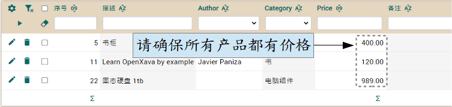

我们学到了如何从外部文件定义总计，从而将配置参数与我们的业务逻辑独立，从而无需修改代码来配置它们。在本课中，我们将看到如何使用 SQL 语句来修改数据库的表，以便学习如何修改 schema 而不丢失其中包含的数据。
手动更改 schema
当我们使用 @Calculation 或 @DefaultValueCalculator 之类的东西时，OpenXava 提供的 schema 自动进化模式会显的有些不足，因为它会在您添加新的属性时添加新的一列，但它并不会用正确的值填充该列。在这种情况下，我们添加了几个具有 @Calculation 的持久属性，其值在用户与对象（记录）互动之前不会重新计算。此外，我们为 vatPercentage 设置了一个默认值，该值仅在用户创建新对象（记录）时有效，而对现有对象无效。我们必须用相应的值填充新列。
鉴于我们处于早期开发阶段，删除所有记录会是一个好的解决方案，但在生产环境中这肯定不是一个好主意，因此我们将调整数据库以适应新代码，从而不会丢失数据，来说明手动进化 schema。
最简单的方法是使用应用程序本身进行更新。我们试着更新产品价格。为了让新计算属性正常工作，所有产品都应该有价格，所以用你的浏览器转到产品模块并确保所有产品都有价格：

如果某些产品没有价格，请编辑并输入价格。
接下来的更改并不是那么简单，因此我们将在数据库执行 SQL 语句。要执行这些语句，请确保应用程序正在运行，然后使用 OpenXava Studio 的菜单选项 OpenXava > Database Manager：
现在您已可以编写和执行 SQL。首先，我们在所有的详细信息中设置 pricePerUnit 列的值：
UPDATE COMMERCIALDOCUMENT_DETAILS
SET PRICEPERUNIT = (
SELECT PRICE FROM PRODUCT
WHERE NUMBER = PRODUCT_NUMBER
)
再来更新所有发票的 vatPercentage：
UPDATE COMMERCIALDOCUMENT
SET VATPERCENTAGE = 21
之后是 vat 的更新：
UPDATE COMMERCIALDOCUMENT
SET VAT = (
SELECT SUM(PRICEPERUNIT * QUANTITY) * 0.21
FROM COMMERCIALDOCUMENT_DETAILS D
WHERE D.COMMERCIALDOCUMENT_OID = COMMERCIALDOCUMENT.OID
)
最后，更新所有发票的 totalAmount：
UPDATE COMMERCIALDOCUMENT
SET TOTALAMOUNT = (
SELECT SUM(PRICEPERUNIT * QUANTITY) * 1.21
FROM COMMERCIALDOCUMENT_DETAILS D
WHERE D.COMMERCIALDOCUMENT_OID = COMMERCIALDOCUMENT.OID
)
请注意，以上语句与 OpenXava 包含的数据库 HSQLDB 配合得很好。如果您将它们在别的数据库使用，可能必须调整语法。执行以上语句后，您可以试着运行应用程序。它应该像 12. @Calculation 和集合总计 中 “集合的总计属性” 的图差不多，甚至对已存在的发票和订单也是。
总结
在这章，您学到如何使用 SQL 语句手动更改数据库的表（schema），这样在生产时就不会失去任何已有的资料。